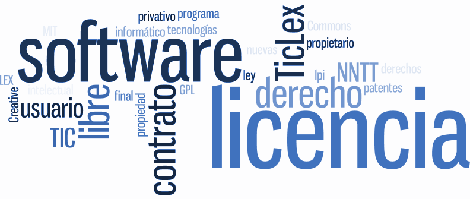
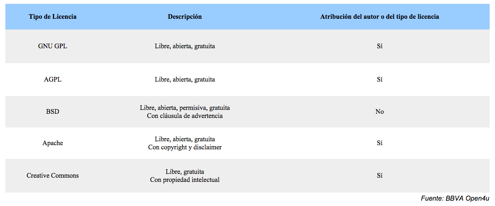
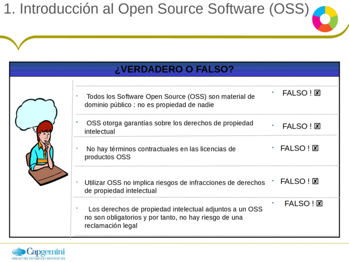
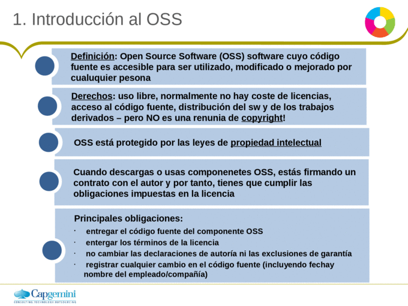
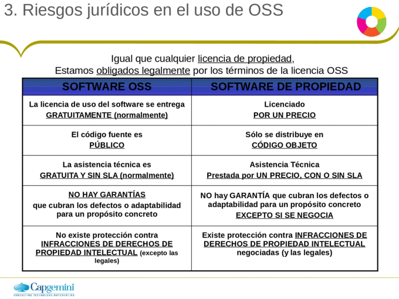
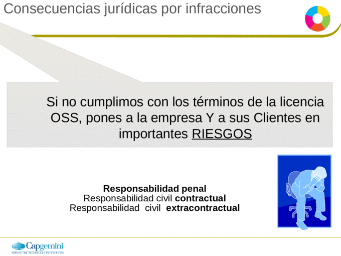
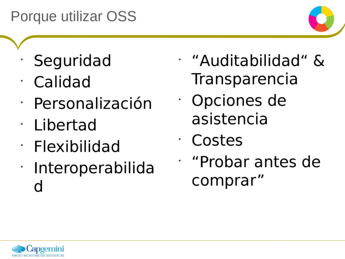

Home
Proyecto
Quiz
Bibliografia
About
Las 5 licencias de software libre más importantes
licencia
mas que todo las licencias son un contrato entre el usuario y autor del programa en las que se establecen una serie de términos y cláusulas que el usuario debe cumplir para usar el software.
Los diferentes tipos de licencia

Aspectos legales de OSS

   
Copyright 2019
PEDRO ANDRES GALVIS 191642
ALEJANDRO RUEDAS JACOME 191666
Ir arriba